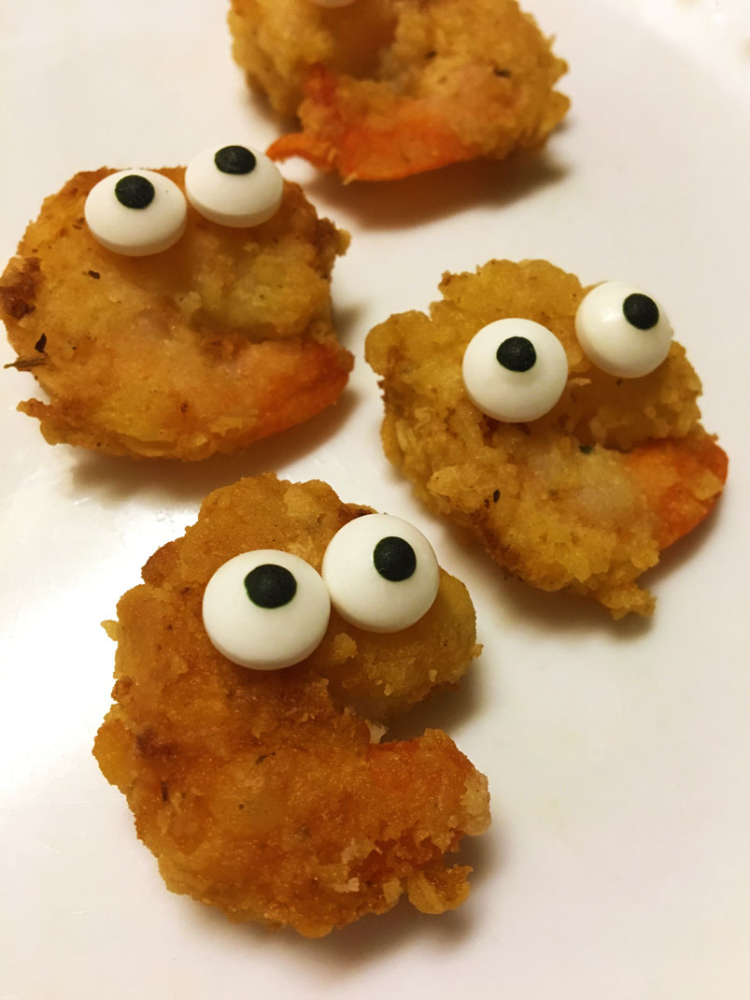

Закуска естественного происхождения. Обнаружены на планете класса М.
"Pop a poppler in your mouth when you come to Fishy Joe's.
What they're made of is a mystery. Where they come from no one knows.
You can pick 'em, you can lick em, you can chew 'em, you can stick 'em;
if you promise not to sue us, you can shove one up your nose."
Смотрите также:
страус,
грызуны.
Вернуться на главную.
the Glutton Club, или же Клуб обжор, во главе с его председателем Charles Robert Darwin © все права защищены ото всех и не принадлежат никому